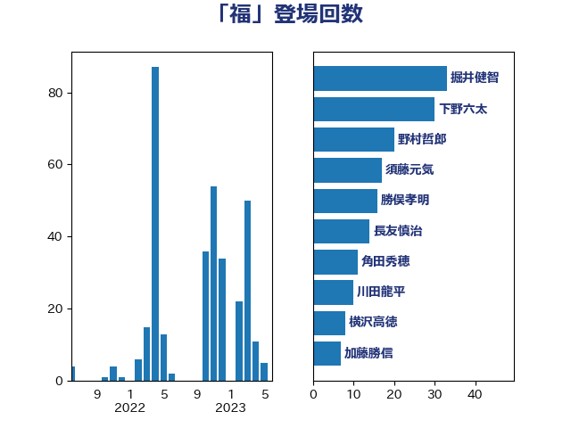

単語「福」

| 掘井健智 | 日本維新の会 | 33 回 |
| 下野六太 | 公明党 | 30 回 |
| 野村哲郎 | 自由民主党 | 20 回 |
| 須藤元気 | 無所属 | 17 回 |
| 勝俣孝明 | 自由民主党 | 16 回 |
| 長友慎治 | 国民民主党 | 14 回 |
| 角田秀穂 | 公明党 | 11 回 |
| 川田龍平 | 立憲民主党 | 10 回 |
| 横沢高徳 | 立憲民主党 | 8 回 |
| 加藤勝信 | 自由民主党 | 7 回 |
| 東徹 | 日本維新の会 | 6 回 |
| 細田博之 | 自由民主党 | 5 回 |
| 梅谷守 | 立憲民主党 | 5 回 |
| 野間健 | 立憲民主党 | 4 回 |
| 田村まみ | 国民民主党 | 4 回 |
| 堤かなめ | 立憲民主党 | 4 回 |
| 野田聖子 | 自由民主党 | 3 回 |
| 緒方林太郎 | 無所属 | 3 回 |
| 池畑浩太朗 | 日本維新の会 | 3 回 |
| 梅村みずほ | 日本維新の会 | 3 回 |
| 仁木博文 | 無所属 | 3 回 |
| 上田英俊 | 自由民主党 | 3 回 |
| 臼井正一 | 自由民主党 | 2 回 |
| 篠原孝 | 立憲民主党 | 2 回 |
| 山下芳生 | 日本共産党 | 2 回 |
| 中根一幸 | 自由民主党 | 2 回 |
| 高階恵美子 | 自由民主党 | 1 回 |
| 野中厚 | 自由民主党 | 1 回 |
| 足立康史 | 日本維新の会 | 1 回 |
| 石橋通宏 | 立憲民主党 | 1 回 |
| 石垣のりこ | 立憲民主党 | 1 回 |
| 田村智子 | 日本共産党 | 1 回 |
| 田嶋要 | 立憲民主党 | 1 回 |
| 田名部匡代 | 立憲民主党 | 1 回 |
| 田中健 | 国民民主党 | 1 回 |
| 海江田万里 | 立憲民主党 | 1 回 |
| 山田太郎 | 自由民主党 | 1 回 |
| 山田勝彦 | 立憲民主党 | 1 回 |
| 宮崎雅夫 | 自由民主党 | 1 回 |
| 堀場幸子 | 日本維新の会 | 1 回 |
| 伊藤孝恵 | 国民民主党 | 1 回 |
| 中村裕之 | 自由民主党 | 1 回 |
| 中川宏昌 | 公明党 | 1 回 |